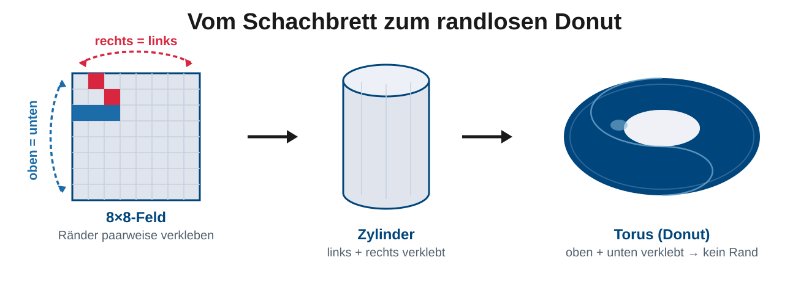
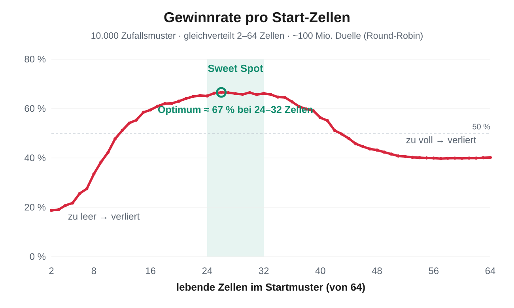

Biotop sieht aus wie ein Spiel – darunter steckt echte Mathematik. Drei Fragen, die harmlos aussehen, führen mitten in die Diskrete Modellierung des ersten Semesters. Und 10.000 simulierte Start-Konfigurationen verraten, was wirklich gewinnt.
Drei Fragen an ein digitales Ökosystem – mit Beweis statt Bauchgefühl.
Wir verkleben die Ränder: rechts an links, oben an unten. Aus dem Quadrat wird ein Torus – eine Fläche ganz ohne Rand.

Antwort: Das endliche Feld verhält sich wie ein unendliches: jede Zelle hat exakt 8 Nachbarn, kein Ort ist „besonders". Genau das brauchen wir für die faire Antwort auf Frage 3.
Fair-Play-Grenze: höchstens 24 von 64 Zellen lebendig. Mit dem Binomialkoeffizienten zählen wir alle erlaubten Muster auf.
Anzahl aller Startmuster mit 0 bis 24 von 64 lebenden Zellen:
exakt 552 859 891 708 071 949 Muster
mehr, als es Sekunden seit dem Urknall gegeben hat – stures Durchprobieren (Brute Force) chancenlos
Antwort: Rund 553 Billiarden erlaubte Biotope – keine Tabelle „bester Muster" zum Auswendiglernen. Man muss bauen, simulieren und mutig sein. Kreativität gewinnt.
Nein – beweisbar nicht. Auf dem randlosen Torus ist „links" nur „rechts", um eine halbe Feldbreite verschoben – das Feld merkt den Unterschied gar nicht.
Dazu ein winziges Regel-Detail: Eine neue Zelle entsteht nur bei genau 3 Nachbarn. Weil 3 ungerade ist, gibt es nie ein „2 Rot : 2 Blau"-Patt – die Regel ist vollkommen farb-symmetrisch. Randloser Torus + farb-symmetrische Regel ergeben zwingend: Runde 2 (Seiten getauscht) ist eine exakte Kopie von Runde 1.
BEWIESEN ✓ Weder links noch rechts ist im Vorteil – die Siegchancen sind positionsunabhängig. Die zweite Runde war überflüssig und wurde gestrichen.
Wie dicht sollte ein Startmuster sein?
Weder fast leer noch randvoll: Es gibt ein messbares Dichte-Optimum – gemessen, nicht vermutet.

≈ 67 %
Siegquote im Sweet Spot
24–32
optimal lebende Zellen (von 64)
- Zu leer (< 12 Zellen): zu wenig Substanz – das Muster stirbt aus.
- Zu voll (> 40 Zellen): Überbevölkerung – das Muster kollabiert.